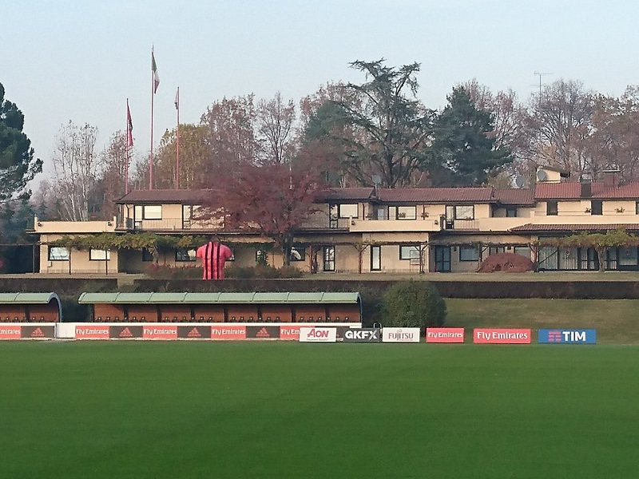

Milanello
Dove Trovarci
Un po di Storia
Per volere dell'allora presidente milanista Andrea Rizzoli, nacque il centro sportivo Milanello: progettato dall'architetto Viani e dall'ingegner Crescentini, fu il primo centro interamente dedicato alla preparazione atletica della squadra. Fu inaugurato nel 1963. Rizzoli già sapeva di abbandonare la società, eppure volle comunque omaggiare la squadra con un centro sportivo giudicato all'avanguardia sin da quando fu costruito. In principio, il fatto che la struttura si trovasse abbastanza distante dal centro di Milano fu una caratteristica poco apprezzata dai calciatori rossoneri, soprattutto quelli che avevano famiglia. Nel primo periodo di presidenza Berlusconi fu soggetto a una ristrutturazione che lo fornì di ulteriori servizi quali ad esempio piscine, palestre, e la "gabbia" voluta dall'allora allenatore Arrigo Sacchi (la gabbia consiste in un campo di gioco dalle dimensioni ridotte con fondo in erba in cui si gioca senza sosta, con il pallone sempre in movimento per favorire appunto la velocità di esecuzione; è delimitata da un muro alto 2,30 metri sormontato da una recinzione alta 2,50 metri). Al di fuori delle esigenze del Milan, il centro di Milanello ha inoltre ospitato diverse volte la preparazione della nazionale italiana in vista di manifestazioni internazionali, quali ad esempio i campionati europei di Germania Ovest 1988, Inghilterra 1996 e Belgio-Paesi Bassi 2000.